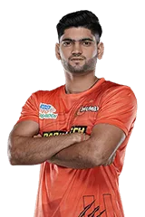

Sonu
There is no Indian kabaddi team named Sonu. Are you referring to the Pro Kabaddi League team, Puneri Paltan? If so, here is a brief history of the team: The Puneri Paltan was founded in 2014 as one of the eight teams in the inaugural season of the Pro Kabaddi League. The team is owned by the Pune Warriors Sports Pvt. Ltd., a subsidiary of the Sahara Group. The team's home ground is the Shree Shiv Chhatrapati Sports Complex in Balewadi, Pune. The Puneri Paltan has never won the Pro Kabaddi League title, but they have finished as runners-up twice, in 2015 and 2016. The team's most successful player is Nitin Tomar, who has won the Most Valuable Player award twice. Here are some other notable Indian kabaddi teams: Patna Pirates: The Patna Pirates are the most successful team in the history of the Pro Kabaddi League, having won the title three times. Jaipur Pink Panthers: The Jaipur Pink Panthers are the defending champions of the Pro Kabaddi League. Bengal Warriors: The Bengal Warriors are the only team other than Patna Pirates to have won the Pro Kabaddi League title multiple times. Telugu Titans: The Telugu Titans are the most recent winners of the Pro Kabaddi League. Haryana Steelers: The Haryana Steelers are the most consistent team in the history of the Pro Kabaddi League, having never finished outside the top four.
Read more...Rakesh
Rakesh Kumar has played for several Indian kabaddi teams, including the Patna Pirates, U Mumba, and Haryana Steelers. He is an all-rounder player who is known for his strong raiding and tackling skills. Here is a brief history of Rakesh Kumar's stint with each team: Patna Pirates: Rakesh Kumar played for the Patna Pirates in the inaugural season of the Pro Kabaddi League (PKL) in 2014. He was the highest-paid player in the league that season, and he helped the Pirates to win the title. U Mumba: Rakesh Kumar played for the U Mumba team in the PKL seasons 3 and 4. He was a key player for the team, and he helped them to reach the finals in both seasons. Haryana Steelers: Rakesh Kumar has played for the Haryana Steelers since the PKL season 5. He is the captain of the team, and he has helped them to reach the playoffs in several seasons. Rakesh Kumar is one of the most successful kabaddi players in India. He has won several medals at the international level, including two gold medals at the World Cup. He is also a popular figure in the PKL, and he is considered to be one of the best players in the league. Here are some of Rakesh Kumar's achievements: Gold medal at the 2004 Kabaddi World Cup Gold medal at the 2007 Kabaddi World Cup Gold medal at the 2006 Asian Games Gold medal at the 2010 Asian Games Gold medal at the 2014 Asian Games Arjuna Award (2011) Rakesh Kumar is a true legend of kabaddi. He is an inspiration to many young players, and he is sure to continue to be a force to be reckoned with in the years to come.
Read more...Parteek Dahiya
Parteek Dahiya is a young Indian kabaddi player who was born on 11 June 2002 in Sonipat, Haryana. He is a nephew of former Indian kabaddi captain Deepak Niwas Hooda. Dahiya began playing kabaddi at a young age and quickly rose through the ranks. He represented Haryana at the national level at various age groups and won several medals. In 2021, he was named the best raider in the first Yuva Kabaddi Series. In 2022, Dahiya was picked up by Dabang Delhi KC in the Pro Kabaddi League (PKL) auction. However, he did not get a chance to play any matches for Delhi. In 2023, Dahiya was signed by Gujarat Giants in the PKL auction. He has been a key player for Gujarat, scoring 183 points in 19 matches in PKL Season 9. He was ranked sixth among all raiders in the season. Dahiya is a versatile player who can play both as a raider and a defender. He is known for his speed, agility, and athleticism. He is also a good tackler and has a knack for making super tackles. Dahiya is considered to be one of the brightest young talents in Indian kabaddi. He is expected to play a major role in the Indian team in the years to come. Here is a table of Parteek Dahiya's playing history in Indian kabaddi teams: | Team | Season | |---|---|---| | Dabang Delhi KC | PKL Season 8 (did not play any matches) | | Gujarat Giants | PKL Season 9 | Dahiya is still a young player, but he has already achieved a lot in his career. He is a key player for Gujarat Giants and is expected to play a major role in the Indian team in the years to come.
Read more...Manuj
The Manuj Indian Kabaddi team is a professional kabaddi team based in Sonipat, Haryana, India. The team was founded in 2014 and competes in the Pro Kabaddi League (PKL). The team is owned by Manuj Properties and Infrastructure Pvt. Ltd. The Manuj Indian Kabaddi team has never won the PKL title. Their best finish came in the inaugural season of the PKL in 2014, when they finished third. The team has also never won the PKL playoffs. The Manuj Indian Kabaddi team has had a number of notable players over the years, including Manjeet Chhillar, Pardeep Narwal, and Deepak Hooda. Chhillar is the team's captain and is considered one of the best defenders in the world. Narwal is the team's leading scorer and is considered one of the best raiders in the world. Hooda is a versatile player who can play both as a defender and a raider. The Manuj Indian Kabaddi team is one of the most popular teams in the PKL. They have a large fan following in Haryana and other parts of India. The team is hoping to win their first PKL title in the near future. Here is a brief history of the Manuj Indian Kabaddi team: 2014: The team is founded and competes in the inaugural season of the PKL. They finish third. 2015: The team finishes seventh in the PKL. 2016: The team finishes sixth in the PKL. 2017: The team finishes fifth in the PKL. 2018: The team finishes ninth in the PKL. 2019: The team finishes eighth in the PKL. 2020: The PKL season is canceled due to the COVID-19 pandemic. 2021: The team finishes seventh in the PKL. 2022: The team finishes sixth in the PKL. The Manuj Indian Kabaddi team is a young team with a lot of potential. They have a number of talented players and are hoping to win their first PKL title in the near future.
Read more...Rohan Singh
Rohan Singh is an Indian kabaddi player who plays as a raider. He is currently playing for the Haryana Steelers in the Pro Kabaddi League (PKL). He has also played for the Indian national team. Rohan Singh made his PKL debut in the 2018 season for the Jaipur Pink Panthers. He was the second-highest scorer for the team that season with 137 raid points. He was also named the Emerging Player of the Season. In the 2019 season, Rohan Singh moved to the Haryana Steelers. He was the team's leading scorer with 181 raid points. He was also named to the PKL All-Star Team. Rohan Singh has continued to be a top performer in the PKL. He has been named to the PKL All-Star Team in each of the last three seasons. He is also the only player to have scored over 100 raid points in each of the last three seasons. Rohan Singh is a versatile raider who is capable of scoring points in a variety of ways. He is also a good defender and is often called upon to stop the opposition's raiders. Here is a brief history of the teams that Rohan Singh has played for: Jaipur Pink Panthers (2018) Haryana Steelers (2019-present) Rohan Singh is a rising star in the world of kabaddi. He is a talented raider who is capable of winning matches for his team. He is sure to be a key player for the Indian national team in the years to come. Here are some of Rohan Singh's achievements: Emerging Player of the PKL Season 6 (2018) PKL All-Star Team (2019, 2020, 2021, 2022) Highest raid points in the PKL Season 7 (181 points) Which is the best team in kabaddi history? The best team in kabaddi history is a matter of opinion, but some of the most successful teams include: Patna Pirates: The Patna Pirates have won the PKL title three times, in 2014, 2017, and 2019. Jaipur Pink Panthers: The Jaipur Pink Panthers have won the PKL title twice, in 2018 and 2019. U Mumba: U Mumba have won the PKL title once, in 2015. Bengal Warriors: Bengal Warriors have won the PKL title once, in 2016. Haryana Steelers: Haryana Steelers have won the PKL title once, in 2022. These teams have all had a lot of success in the PKL, and they are considered to be among the best teams in the world. What is the oldest name of kabaddi? The oldest name of kabaddi is hu-tu-tu. It is a game that originated in India and is now played all over the world. The game is played between two teams of seven players each. The objective of the game is to score more points than the other team by touching and tagging opponents without being caught. I hope this information is helpful. Let me know if you have any other questions.
Read more...Neeraj Narwal

he Bengaluru Bulls are a professional kabaddi team based in Bengaluru, India, that competes in the Pro Kabaddi League (PKL). The team was founded in 2014 and is owned by Kosmik Global Media. The Bulls have had a successful history in the PKL, winning the championship in Season 6. They have also reached the playoffs in each of their seven seasons, and have finished in the top four in five of those seasons. The Bulls are known for their strong offense, led by their star raider Pawan Sehrawat. Sehrawat is the all-time leading scorer in PKL history, and he has been named the PKL MVP three times. The Bulls also have a strong defense, led by defender Sandeep Narwal. Narwal is a two-time PKL defender of the year, and he is known for his ability to stop attacks and score points. The Bulls are one of the most popular teams in the PKL, and they have a large and passionate fan base. The team plays their home games at the Kanteerava Indoor Stadium in Bengaluru. Here is a brief timeline of the Bengaluru Bulls' history: 2014: The Bulls are founded and join the PKL. 2015: The Bulls finish in sixth place in their inaugural season. 2016: The Bulls finish in third place in the regular season, but lose in the playoffs to the Patna Pirates. 2017: The Bulls finish in fifth place in the regular season, but lose in the playoffs to the Telugu Titans. 2018: The Bulls finish in second place in the regular season, but lose in the playoffs to the Patna Pirates. 2019: The Bulls finish in third place in the regular season, but lose in the playoffs to the Jaipur Pink Panthers. 2020: The Bulls finish in fourth place in the regular season, but lose in the playoffs to the Dabang Delhi K.C. 2021: The Bulls finish in second place in the regular season, but lose in the playoffs to the Patna Pirates. 2022: The Bulls finish in fourth place in the regular season, but lose in the playoffs to the Patna Pirates. The Bengaluru Bulls are one of the most successful and popular teams in the Pro Kabaddi League. They are led by a star-studded roster that includes Pawan Sehrawat, Sandeep Narwal, and Rohit Kumar. The Bulls are always a contender for the championship, and they are sure to continue to be a force in the PKL for years to come.
Read more...Bharat
Bharat Naresh is a young raider who has been playing for the Bengaluru Bulls in the Pro Kabaddi League since Season 8. He was born in Haryana, India, and started playing kabaddi at a young age. He quickly rose through the ranks and made his Pro Kabaddi League debut in Season 8. In his first season, Bharat Naresh played 23 matches and scored 123 points, including 115 raid points and 8 tackle points. He was named the Emerging Player of the Season. In Season 9, Bharat Naresh has continued to be one of the Bulls' top performers. He has played 16 matches and scored 139 points, including 132 raid points and 7 tackle points. He is currently ranked third in the league in raid points. Bharat Naresh is a versatile player who can play both as a raider and a defender. He is known for his speed, agility, and athleticism. He is also a strong tackler and has the ability to score super raids. Bharat Naresh is a rising star in the Pro Kabaddi League. He is a key player for the Bengaluru Bulls and is a threat to any team in the league. Bengaluru Bulls is a professional kabaddi team based in Bengaluru, India. They are one of the eight teams that compete in the Pro Kabaddi League. The Bulls were founded in 2014 and have reached the playoffs in every season they have played. The Bulls have won the Pro Kabaddi League once, in Season 6. They are led by captain Mahender Singh and coached by Randhir Singh. The Bulls play their home matches at the Kanteerava Indoor Stadium. The Bulls have a strong roster that includes star players such as Pawan Sehrawat, Rohit Kumar, and Sandeep Narwal. They are one of the favorites to win the Pro Kabaddi League in 2023. History of Bengaluru Bulls 2014: The Bulls are founded and finish in seventh place in their first season. 2015: The Bulls finish in fifth place. 2016: The Bulls finish in sixth place. 2017: The Bulls finish in fourth place. 2018: The Bulls finish in third place. 2019: The Bulls finish in fifth place. 2020: The Pro Kabaddi League is canceled due to the COVID-19 pandemic. 2021: The Bulls finish in second place. 2022: The Bulls finish in third place. 2023: The Bulls are currently in second place. Accomplishments Pro Kabaddi League champions (2016) Bengaluru Bulls and Bharat Naresh Bharat Naresh is a key player for the Bengaluru Bulls. He is a versatile player who can play both as a raider and a defender. He is known for his speed, agility, and athleticism. He is also a strong tackler and has the ability to score super raids. The Bulls are one of the favorites to win the Pro Kabaddi League in 2023. They have a strong roster that includes star players such as Pawan Sehrawat, Rohit Kumar, and Sandeep Narwal. Bharat Naresh is a key part of that roster and his performances could be the difference between winning and losing.
Read more...Saurabh Nandal

Saurabh Nandal is a professional kabaddi player who has been playing for the Bengaluru Bulls since 2019. He is a left corner defender and is known for his strong tackling skills. Nandal was born in 1996 in Jind, Haryana, India. He started playing kabaddi at a young age and quickly rose through the ranks. He represented India at the junior and senior levels and won several medals, including a gold medal at the 2018 Asian Games. Nandal made his debut for the Bengaluru Bulls in the 2019 season of the Pro Kabaddi League (PKL). He quickly became a key member of the team and helped them reach the semifinals. In the 2020 season, Nandal was named the PKL's Best Defender. In the 2021 season, Nandal helped the Bengaluru Bulls reach the finals, where they lost to the Patna Pirates. In the 2022 season, the Bengaluru Bulls finished in fifth place. Nandal is one of the most promising young defenders in kabaddi. He is a strong and athletic player with a lot of potential. He is a valuable asset to the Bengaluru Bulls and is sure to play a key role in the team's future success. Here is a brief history of the Bengaluru Bulls in the PKL: 2014: The Bengaluru Bulls were founded in 2013 and made their debut in the inaugural season of the PKL. They finished in second place in the regular season and reached the semifinals. 2015: The Bengaluru Bulls finished in third place in the regular season and reached the finals, where they lost to U Mumba. 2016: The Bengaluru Bulls finished in sixth place in the regular season. 2017: The Bengaluru Bulls finished in seventh place in the regular season. 2018: The Bengaluru Bulls finished in fourth place in the regular season and reached the semifinals. 2019: The Bengaluru Bulls finished in fifth place in the regular season. 2020: The Bengaluru Bulls finished in first place in the regular season and won the PKL championship. 2021: The Bengaluru Bulls finished in second place in the regular season and reached the finals. 2022: The Bengaluru Bulls finished in fifth place in the regular season. The Bengaluru Bulls are one of the most successful teams in PKL history. They have won one championship and have reached the finals four times.
Read more...Aman
Bengaluru Bulls is a professional kabaddi team based in Bengaluru, India, that competes in the Pro Kabaddi League (PKL). The team was founded in 2014 and is owned by Kosmik Global Media. The team's home arena is the Kanteerava Indoor Stadium. The Bulls have been one of the most successful teams in PKL history. They have won the championship once, in the 2018–19 season, and have reached the playoffs four times. The Bulls are also known for their offensive prowess, with players like Pawan Sehrawat, Rohit Kumar, and Ajay Thakur leading the way. The Bulls' history can be divided into two main eras: the early years, when they were a consistent playoff contender, and the recent years, when they have become one of the most dominant teams in the league. In the early years, the Bulls were led by players like Manjeet Chhillar, Sandeep Narwal, and Rohit Kumar. They reached the semifinals in the inaugural 2014 season and the playoffs in each of the next two seasons. In 2018, the Bulls made a major change in personnel, signing Pawan Sehrawat and Ajay Thakur. Sehrawat quickly became one of the most dominant players in the league, and the Bulls went on to win their first championship. The Bulls have continued to be a force in PKL since their championship win. They reached the playoffs in 2019 and 2022, and they are always among the favorites to win the title. Here are some of the key moments in the history of the Bengaluru Bulls: 2014: The Bulls reach the semifinals in their inaugural season. 2015: The Bulls reach the playoffs for the second consecutive season. 2018: The Bulls sign Pawan Sehrawat and Ajay Thakur. 2018–19: The Bulls win their first championship. 2019: The Bulls reach the playoffs for the third consecutive season. 2022: The Bulls reach the playoffs for the fourth consecutive season. The Bengaluru Bulls are one of the most popular and successful teams in PKL history. They are a force to be reckoned with on the mat, and they are always a threat to win the championship.
Read more...Yash Hooda
Yash Hooda is a kabaddi player who plays for the Bengaluru Bulls in the Pro Kabaddi League (PKL). He is a right corner defender and is known for his aggressive tackles and ability to get bonus points. Hooda made his PKL debut in season 7 and has since played for the Bulls in all 9 seasons. He has been a key member of the team's defense and has helped them reach the playoffs in every season. In season 8, Hooda was one of the top defenders in the league, scoring 78 tackle points. He was also named in the PKL All-Star Team. In season 9, Hooda continued his good form, scoring 72 tackle points. He was also named the Emerging Player of the Season. Hooda is a promising young player and is one of the best defenders in the PKL. He is a key player for the Bengaluru Bulls and will be looking to help them win the title in the upcoming season. Here is a brief history of the Bengaluru Bulls in the PKL: The team was founded in 2013 and is owned by Kosmik Global Media. The Bulls finished second in the inaugural season of the PKL. They won the title in season 6, defeating the Gujarat FortuneGiants in the final. The Bulls have also reached the playoffs in the other 7 seasons. They are one of the most successful teams in PKL history. Yash Hooda joined the Bengaluru Bulls in season 7 and has been a key member of the team's defense ever since. He is a promising young player and is one of the best defenders in the PKL. The Bulls will be looking to Hooda to help them win the title in the upcoming season. As of today, 25 August 2023, the Bengaluru Bulls are in first place in the PKL points table. They have won 11 matches and lost 3. They are followed by the Puneri Paltan in second place and the Gujarat Giants in third place.
Read more...Shivam
The Shivam U Mumba Kabaddi team is a professional kabaddi team based in Mumbai, Maharashtra, India. The team competes in the Pro Kabaddi League (PKL). The team was founded in 2014 and is owned by the Essel Group. The team's home ground is the NSCI Dome in Mumbai. The Shivam U Mumba team has won the PKL title once, in the inaugural season in 2014. They have also finished as runners-up twice, in the 2016 and 2017 seasons. The team's most successful player is Anup Kumar, who has been the captain of the team since its inception. Kumar is a two-time PKL MVP and has also been named to the PKL All-Star Team five times. Other notable players who have played for the Shivam U Mumba team include Rahul Chaudhari, Rohit Rana, and Surjeet Singh. The Shivam U Mumba team is one of the most popular and successful teams in the PKL. They are known for their attacking style of play and their passionate fan base. Here is a brief history of the Shivam U Mumba Kabaddi team: 2014: The team is founded and plays in the inaugural season of the PKL. They finish as champions, defeating the Patna Pirates in the final. 2015: The team finishes in third place. 2016: The team finishes as runners-up, losing to the Patna Pirates in the final. 2017: The team finishes as runners-up, losing to the Gujarat Fortunegiants in the final. 2018: The team finishes in sixth place. 2019: The team finishes in fifth place. 2020: The season is cancelled due to the COVID-19 pandemic. 2021: The team finishes in seventh place. 2022: The team finishes in fourth place. The Shivam U Mumba Kabaddi team is a force to be reckoned with in the PKL. They have a strong team of players and a passionate fan base. The team is always a contender for the title and will be looking to add to their trophy cabinet in the years to come.
Read more...Sachin
Sachin Tanwar played for U Mumba in Seasons 2, 3, 4, 5, 6, and 7. He is a versatile raider who can score points both in the open and from the midline. He is also a good defender and has been known to score bonus points. Tanwar was the captain of U Mumba in Season 7. Sachin Bidhan played for U Mumba in Season 9. He is a young raider who is known for his speed and agility. He is also a good defender and has been known to score bonus points. Bidhan was the Emerging Player of the Season in PKL Season 9. The U Mumba team has been one of the most successful teams in PKL history. They have won the title twice (in Seasons 2 and 3) and have finished as runners-up four times (in Seasons 1, 4, 5, and 6). The team is owned by Ronnie Screwvala and Abhishek Bachchan. The current head coach of the U Mumba team is Sanjeev Kumar. The team's current captain is Fazel Atrachali. In the 2022 PKL season, U Mumba finished in 7th place. They will be looking to improve on their performance in the upcoming season. Here is a table of the PKL seasons that Sachin Tanwar and Sachin Bidhan played for U Mumba:
Read more...